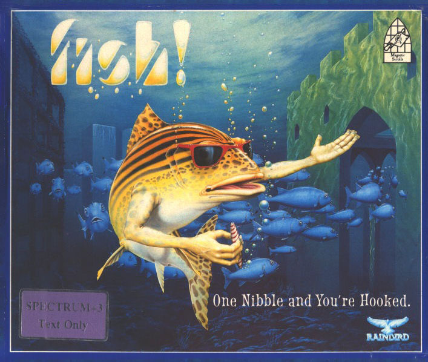
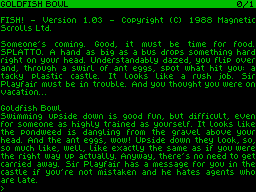
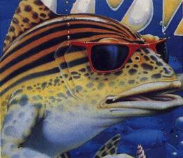

Fish!


{kind=link}

| Publisher: | Rainbird |
| Price: | £15.99, +3 only |
| Year: | 1989 |
| Source: | CRASH, Issue 63 |

Glug, glug! There I am swimming in my goldfish bowl when some stupid human plonks a great big, plastic castle in the water. After my initial confusion, I decide to investigate — something fishy going on here, I think to myself. So in I swim, only to be confronted by a familiar voice. Suddenly, everything comes back to me — I am actually a daring inter-dimensional espionage agent, currently taking a relaxing break in the guise of a fish!

The voice belongs to my boss, Panchax — trust him to interrupt my vacation. He tells me it’s an emergency: the infamous Seven Deadly Fins have sabotaged a project to conserve water on the fish-inhabited planet of Hydropolis.. They have also dismantled a focus wheel which would enable me to warp to Hydropolis. Warping involves transferring an agent’s mind into the body of another creature or person and is extremely painful. To find the three pieces of the focus wheel, I must first complete three separate sub-adventures.
On entering one of the three warps in the castle, I am immediately transferred into the back of a clapped-out van belonging to a hippy band (they’re not around at the moment). I have also become human again — well, I would’ve floundered in my previous fishy form! Finding some clothes and a torch (it is nighttime), I wander outside. I plod across dark fields and soon find a ruined abbey. Inside are a group of drunken hippies — the band — sitting around a camp fire. It’s hard to believe that a part of the focus wheel is in the vicinity.
On completing this section (no I won’t tell you how!), I am returned to the castle where I can enter one of the other two warps. One of these sends me to a forest inhabited by a warp junkie and an exploding parrot! The other transfers me to a recording studio with a short-tempered, ‘coffeeaholic’ producer (reminds me of someone). When I recover all three parts of the focus wheel, I can use it to enter the body of Dr A Roach, a scientist on the waterworld of Hydropolis. This strange place is inhabited by weird fish-people with human torsos, but tails instead of legs.

Dr Roach’s apartment is in Paddlington, but other areas of the city can be visited via the Underground. The many locations include a pub where, instead of drinking, customers sniff special gas in order to get finless. Other innovations include fishofaxes and Fisa cards! But it’s not a good idea to dawdle: The Seven Deadly fins are out to get Roach. So to avoid getting pushed into the path of an oncoming train it’s best to get a disguise.
As in previous Magnetic Scrolls disk-based adventures (Jinxter, Corruption etc), the flexible parser accepts most logical input and permits editing of the current and last command. It also allows up to about ten separate commands to be entered in one line of input. The frequent disk accessing fails to severely interrupt play, although the occasional need to enter anti-piracy passwords is slightly annoying. The lack of any graphics is irrelevant — they would have only required more time — consuming disk accessing and taken up screen space.
With the large vocabulary, problems require much lateral thinking instead of simple word finding. All objects can be examined, often producing a witty response — the fishofax is described as combining the features of a diary and a wallet for four or five times the price!
Although the three sub-adventures don’t take too long to complete (Are you sure about this? — Nick), they do add variety — the game isn’t wholly about fish. The main adventure requires more skill and exploration, containing many red herrings (groan). But if you get stuck, you can always type in special codes for very subtle hints. However, even failure isn’t too frustrating when there is so much side-splitting humour to enjoy. Some adventures use humour to hide a shallow plot, but Fish! combines laughs with thoughtful, challenging problems. In fact, writing this review was made infinitely more difficult by the fact that Nick and Skippy were playing it 24 hours a day! (And they don’t normally play adventures).
| Overall: | 93% |